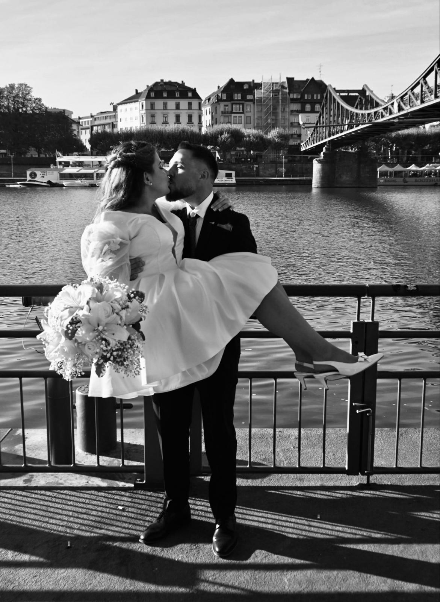
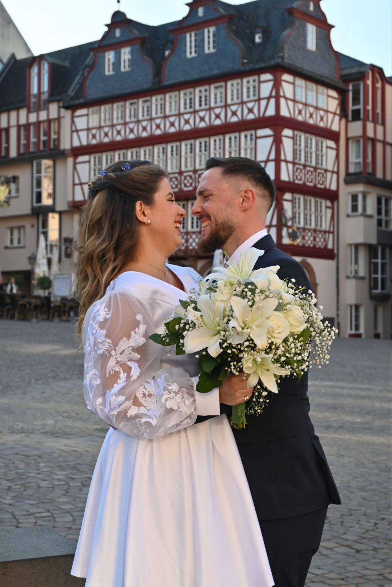

Il matrimonio di
Loris & Mariana
Sardegna, Italia
Cari familiari e amici,
Ci piacerebbe festeggiare questo giorno con voi.
Loris & Mariana
Quattro paesi, una storia
Venezuela · Colombia · Italia · Germania

Testo di esempio
In questa versione della loro storia, Loris e Mariana si sono conosciuti a una cena durata finché non hanno spento le luci. Hanno parlato di ricette di famiglia e di luoghi da visitare. Prima di salutarsi si erano già dati un altro appuntamento.
Le loro radici in Venezuela, Colombia, Italia e Germania sono entrate nelle chiacchiere a tavola, nelle parole prese in prestito e nei viaggi per conoscere le famiglie. Ora immaginano una tavolata in Sardegna, con il mare vicino e tutte quelle voci insieme.




Giorno e luogo
Mancano
Cerimonia
Luogo da confermare
Ricevimento
Luogo da confermare
Dress Code
Abito da cocktail

Per una celebrazione armoniosa, vi chiediamo gentilmente di evitare il colore blu nel vostro abbigliamento.
Cosa fare in Sardegna?

Alghero
Passeggia nel centro storico di Alghero e lungo i bastioni.
Castelsardo
Visita il castello dei Doria e scendi alla spiaggia di Lu Bagnu.
La Maddalena
Dedica un giorno all’arcipelago. Controlla prima gli orari dei traghetti da Palau.
Controlla i tempi di viaggio prima di prenotare e porta qualcosa di caldo per la sera.

Regali
La tua presenza è il regalo più bello. Se vuoi portarci un pensiero, basta che entri in valigia.
Ci sarai?
Rispondi entro il 31 dicembre 2026